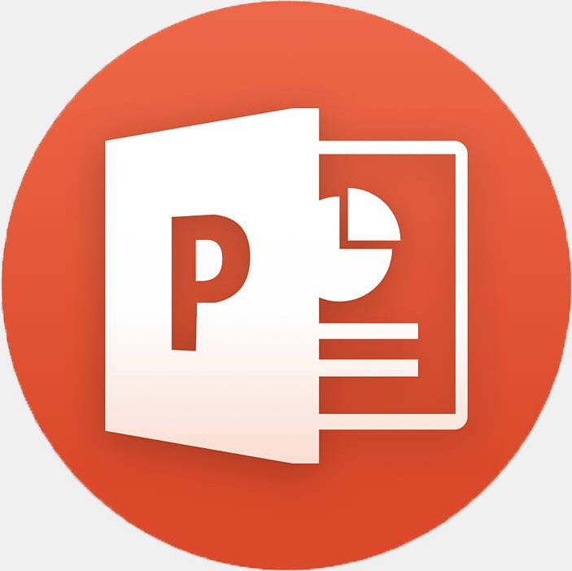
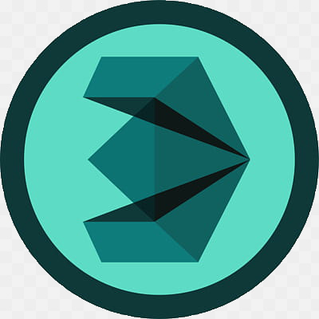

Для Геймдизайнеров
Любой уважающтй себя геймдизайнер должен писать документацию, для предствления своего творения на бумаге, дабы программисты, модельеры и звукорежиссеры могли представить консепцию и суть игры.
Примеры программ:
Microsoft Office Word;
Microsoft Office Powerpoint;

Для Программистов
Программисты должны использовать редакторы кода для написания команд, физики, движка, некоторые пишит ИИ, а также внедряют контент в игру.
Примеры программ:
Sublime text;
Atom;

Для
Модельеров
Модельеры должны создавать: модели персонажей, локаций, некоторые делают анимации при помощи программ для создания 3D
Примеры программ:
3DS MAX;
Blender;


Для Звукорежиссеров
Задача звукорежиссеров делать музыку и звуковые эффекты для игры, а используют они программы для записи и создания аудио дорожек.
Примеры программ:
Adobe Audition;
Cubase;